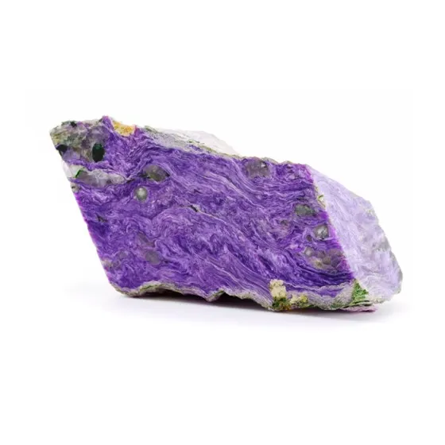

Mineral Grimoire
 Charoite
Charoite
Appearance
Purple, mottled, swirled and veined, often small to medium, tumbled or polished
Origin
Russia
Attributes
Charoite is a stone of transformation. It is the soul stone that overcomes fear. Charoite stimulates inner vision and spiritual insight and aids in coping with enormous change at a spiritual level. It synthesizes the heart and crown chakras, cleanses the aura, and stimulates unconditional love. Charoite encourages vibrational change and links to higher realities while providing deep physical and emotional healing.
Psychologically, Charoite integrates negative qualities and facilitates acceptance of others. It releases deep fears and is particularly useful for overcoming resistance. It bestows drive, vigor, and spontaneity and reduces stress and worry. Charoite can be used to overcome compulsions and obsessions.
Spiritually, Charoite grounds the spiritual self into everyday reality and encourages a path of service to humanity. It opens and balances the crown chakra and can bring insightful visions of past lives.
Healing
Charoite transmutes negative energy into healing. It reenergizes the body when exhausted, heals and integrates dualities, and regulates blood pressure. Charoite treats the eyes, heart, liver, and pancreas. It reverses liver damage due to alcohol and alleviates cramps, aches, and pains. Charoite bestows deep sleep with powerful dreams and overcomes insomnia. It heals autism and bipolar disorders.
Position
Over heart or placed as appropriate in contact with the skin. Gridding with Charoite is highly effective. Gem elixir is an excellent cleanser for the physical body and stabilizer for emotional turmoil.
Magickal Properties
Charoite is a monoclinic silicate found exclusively along the Chara River in Siberia, Russia, and named for that waterway. Its surface swirls with complex patterns of lavender, violet, and deep purple, threaded with black dendritic inclusions and calcite. It was first documented in the 1940s under the name "lilac stone" before receiving its current designation. The black dendrites woven through the stone are not merely decorative; they serve as an anchor, keeping practitioners grounded as their vibrational frequency rises through spiritual engagement.
Charoite is a stone of inner power. Its core work is the dissolution of walls built around personal authority, both the walls that block you from claiming your strength and those that permit its misuse. Known as a warrior stone, it offers the courage to pursue a life path that may feel uncertain, drawing attention to meaningful synchronicities and supporting the interpretation of their messages. For the beginner, it clears and transmutes negativity, shields against harmful external influences, and activates latent psychic gifts and healing abilities. It supports the visioning stage of manifestation and eases nightmare-prone sleep into rest.
For the advanced practitioner, charoite is a particularly valuable companion during healing work with others. It supports objectivity, making it easier to distinguish the client's energetic material from your own, and regulates the flow of high-frequency energy through the body so that the healer can act as a clear vessel without absorbing excess and suffering burnout. It also turns the practitioner's attention toward their own healing needs, reinforcing the principle that self-healing deepens the capacity to serve others. The tinaksite inclusions often present within charoite specimens further strengthen this work, helping the bearer establish and maintain firm energetic boundaries.
Chakra Work
Charoite activates a full vertical column of chakras, from the Earth Star below the feet to the Soul Star above the crown. Placed on the Heart and Crown, it bridges terrestrial feeling with cosmic insight, allowing unconditional love and divine guidance to be received simultaneously without spiritual bypassing. On the Third Eye, it sharpens attention, increases discernment, and helps distinguish genuine spiritual progress from escapism or avoidance. On the Crown and Soul Star, it opens channels for receiving life-path guidance oriented toward community service. Moved to the Solar Plexus, Root, and Earth Star, that same guidance becomes grounded, actionable energy available in the physical realm. Gridded anywhere on or around the body, charoite cleanses and purifies the auric field.
Did You Know?
When charoite was first discovered in Siberia in the 1940s, it was simply called "lilac stone." It was not formally identified as a distinct mineral species until the 1970s, making it one of the newer named minerals in the crystal world.